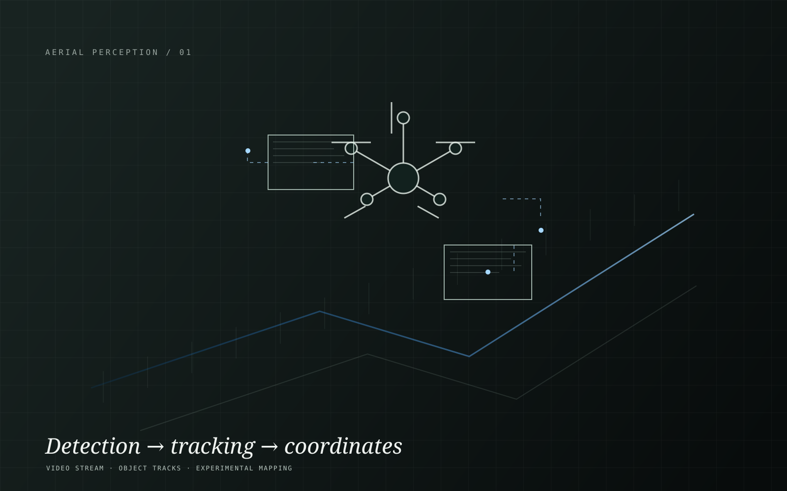
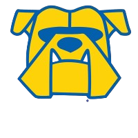
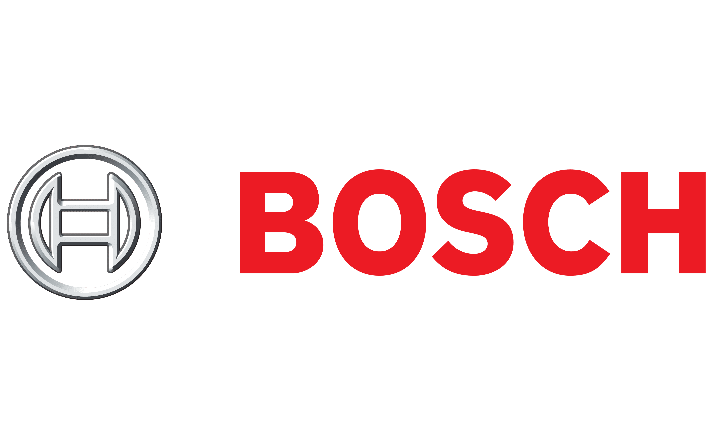
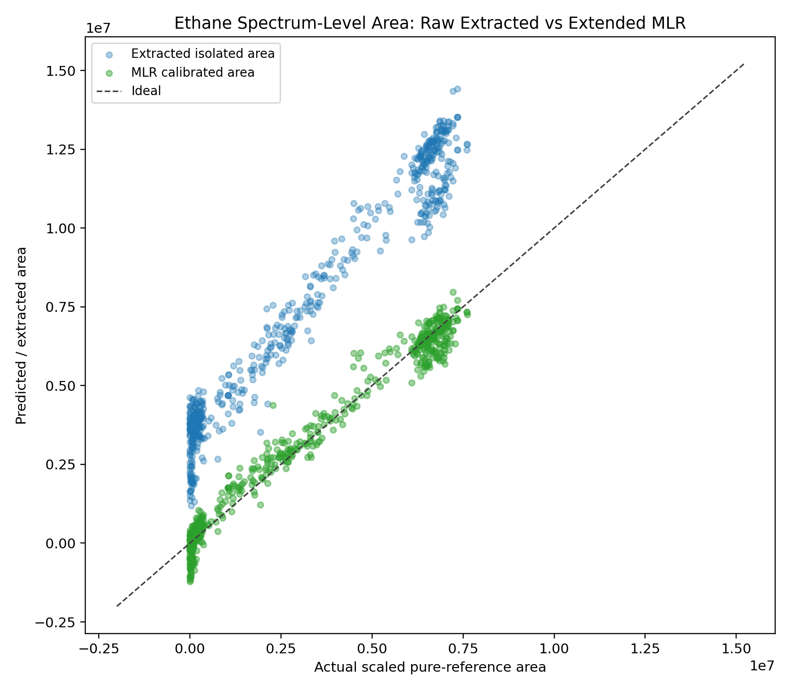
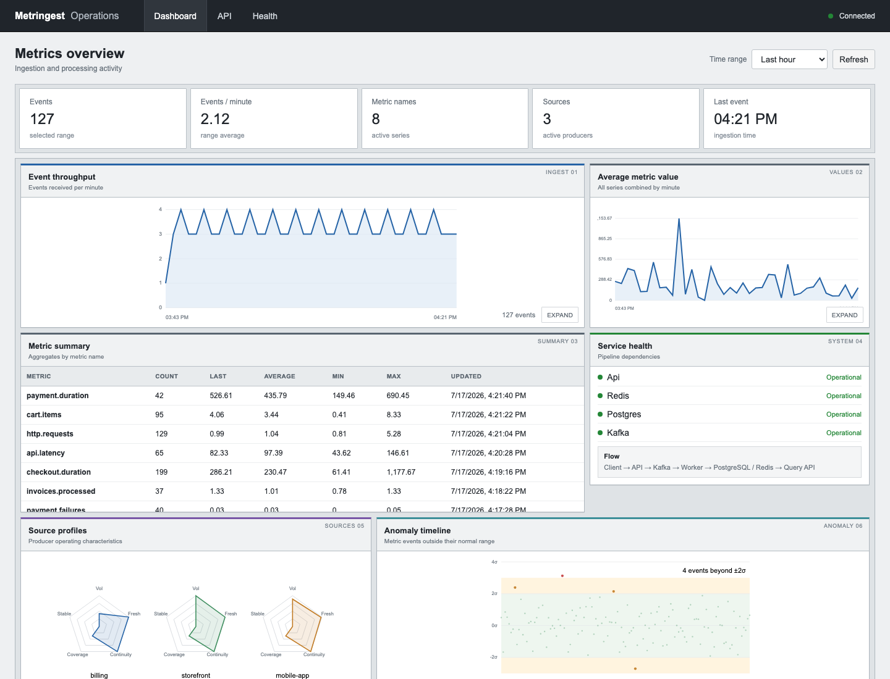

Explore project Aerial PerceptionUAV Object Detection & Tracking01Software for Physical Systems
Colt Melton

Computer Science, Kettering University · January 2027 CSI Intern @ Central Garden & Pet Previously: R&D Engineer / Scientist Intern @ Endress+Hauser
Previously: Automation & Calibration Engineer Intern @ BoschI build software that measures, monitors, and validates real systems. As a CSI intern at Central Garden & Pet, I support SAP/ERP audit work, write scripts, automate Linux workflows, and develop SQL queries and data aggregation software. At Bosch, I investigated braking-control behavior through CAN telemetry, vehicle testing, and prototype integration. At Endress+Hauser, I developed spectroscopy, diagnostics, and validation software for industrial analyzers. My independent work extends that foundation into distributed telemetry, aerial perception, and machine-learning-guided signal decomposition.
Research
Machine Learning-Guided Raman Spectral Decomposition
Senior thesis research in spectral calibration: decomposing Raman spectra into baseline and overlapping peak components so downstream measurement pipelines can use interpretable, validated signals.
2.9M parameters
baseline + up to 3 peaks
512-point windows
sample-grouped 70 / 20 / 10 split
602 spectra
19,753 pure-peak matches
Reconstruction R² > 0.95
Calibration R² up to 0.98
Problem
Raman spectra contain baselines, overlapping peaks, and concentration-dependent behavior that make direct peak isolation difficult to trust in automated analysis.
Approach
Built a machine-learning-guided pipeline that predicts baseline and peak components across 512-point windows, then validates extracted features with reference-matching logic before downstream calibration.
Architecture
Implemented a 2.9M-parameter PyTorch 1D U-Net with physics-aware fitting, peak matching, residual analysis, and calibration evaluation.
Results
Evaluated 602 spectra and 19,753 pure-peak matches. Reconstruction R² exceeded 0.95 and downstream calibration reached up to 0.98 R². Residual and overlap analyses remain visible so the model's limitations can be inspected rather than hidden behind one score.
Tech Stack
Python, PyTorch, NumPy, pandas, 1D signal processing, spectroscopy data pipelines, calibration modeling, peak matching, residual diagnostics, and validation tooling.
What I Learned
Useful ML for sensing systems is not just a model score. It needs interpretable failure modes, calibration context, and outputs that engineers can challenge before acting on them.
Spectra input
512-point windows
1D U-Net
Peak matching
Calibration

Spectral plots
Residual trends
Calibration results
Thesis PDF
Restricted under NDA. Full document access is not available publicly.
Thesis Deck
Restricted under NDA. Presentation materials are available only through approved review.
Systems Projects
Selected systems, in detail.
From live telemetry to aerial perception, explore the work behind each system.

Explore project Distributed SystemsDistributed Telemetry Pipeline02 Explore project
Industrial TelemetryOPC UA Spectroscopy Dashboard03
Explore project
Industrial TelemetryOPC UA Spectroscopy Dashboard03
 Explore project
InfrastructureVMware Automation Platform04
Explore project
InfrastructureVMware Automation Platform04
 Explore project
Infrastructure & Systems EngineeringWintermuteSelf-Hosted Infrastructure, Automation & Live Monitoring05
Explore project
Infrastructure & Systems EngineeringWintermuteSelf-Hosted Infrastructure, Automation & Live Monitoring05
Experience
Hands-on work in enterprise software and industrial systems.
CSI Intern
Central Garden & Pet
October 6, 2026 – Present
SAP / ERP
Audit support
Automation
Tools & Systems
SAP · ERP software · Linux · SQL · Scripting · Data aggregation
- Support audit-related corporate software work in SAP and enterprise resource planning systems.
- Write scripts and automate Linux workflows to support corporate software operations and audit tasks.
- Develop SQL queries and data aggregation software to organize and summarize information for audit-related work.
Research & Development Engineer / Scientist Intern
Endress+Hauser
October 2025 – October 6, 2026
30+ analyzers
4 hrs saved / release
Raman validation
Tools & APIs
Python · C#/.NET · OPC UA · REST APIs · VMware · Bamboo · Robot Framework · Raman analysis tooling
- Developed a spectroscopy monitoring platform combining OPC UA telemetry, spectral visualization, and analyzer diagnostics across 30+ industrial analyzers.
- Automated software deployment and validation workflows using Bamboo, VMware, and Robot Framework, reducing manual testing effort by approximately 4 hours per release cycle.
- Partnered with lead spectroscopy scientists to develop software supporting Raman analyzer validation and customer support investigations.
Automation Software & Calibration Engineer Intern
Bosch International Engineering
October 2023 – July 2025
15+ engineers
CAN telemetry
ECU behavior
Tools & APIs
Engineering APIs · CANoe · CANalyzer · ETAS · CAN bus · ASCET · ECU diagnostics · Automation software
- Developed automation software using proprietary engineering APIs to analyze ASCET-generated control software, enabling 15+ engineers to trace parameter dependencies and investigate system behavior.
- Analyzed CAN bus telemetry using CANoe, CANalyzer, and ETAS tooling to support calibration, validation, and performance investigations of prototype and production braking systems.
- Investigated ECU intervention behavior through vehicle testing and data analysis, identifying interactions between calibration parameters, control logic, and vehicle dynamics.
- Supported prototype vehicle integration through CAN diagnostics, wiring harness fabrication, connector termination, instrumentation, and electrical troubleshooting.
Systems
Interactive Architecture Gallery
Clickable system flows showing implemented boundaries, data movement, and engineering responsibilities across telemetry, diagnostics, infrastructure automation, and scientific ML.
Skills
Capabilities demonstrated in context
Software & Automation
Linux scripting and corporate workflow automation, alongside C#/.NET, Python, REST APIs, PowerShell, Robot Framework, and CI/CD validation for repeatable engineering environments.
- VM lifecycle automation
- Validation workflow support
- SAP/ERP audit workflow support
Distributed Data Systems
SQL queries and data aggregation for corporate audit work, alongside FastAPI ingestion, Kafka event streams, PostgreSQL storage, dead-letter routing, and Prometheus/Grafana observability.
- Event-driven ingestion
- SQL queries and audit data aggregation
- Monitoring and debug workflows
Sensing & Systems Analysis
CAN telemetry, ECU diagnostics, OPC UA, Raman signal processing, object detection, multi-object tracking, residual analysis, and investigation of physical-system behavior.
- Vehicle and analyzer diagnostics
- Signal and residual analysis
- Cross-domain failure investigation
Life beyond the screen
Outside the Lab
Outside of technology, I enjoy staying active, exploring new places, and challenging myself. Whether I'm hiking, boxing, or traveling, or really any chance to be outside, I value experiences that keep life interesting beyond the screen.